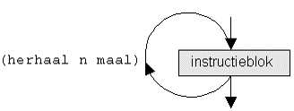

On Youtube
IIP — variabelen & berekeningen

IIP — selecties

IIP — iteraties
IIP — methodes

- 0:00 Intro
- 1:26 reeds gekende methodes
- 5:48 Wpf voorbeeld: UpdateUI()
- 10:14 Console voorbeeld: LeesPositiefGetal(), IsPriem()
- 20:58 hergebruik IsPriem() in WPF toepassing
- 26:06 methodes zonder return (met/zonder parameters): UpdateUI(), DrukMenu(), DrukKerstboom()
- 31:39 methodes met return (met/zonder parameters): VraagPositiefGetal(), GrootsteGemeneDeler()
- 34:19 pure methodes
- 45:31 voordelen van methodes
IIP — collecties

Commentaar
Met commentaar voeg je extra informatie toe aan je code. Commentaar is vrije tekst die niet uitgevoerd wordt.
Commentaar op één regel
// Eerste regel
// Tweede regel
Commentaar over meerdere regels
/* Eerste regel
Tweede regel */
Vuistregels voor goede commentaar
Enkele tips/vuistregels voor een zo leesbare commentaar:
- voeg commentaar pas toe als je programma zo goed als af is, zo vermijd je nodeloos werk
- grote blokken als methodes voorzie je bovenaan van een commentaarblok
- verdeel de coderegels in stukken van telkens een paar regels, en zet bovenaan elk stuk commentaar in één regel (sla niks over)
- scheid stukken telkens met één blanco regel
/// <summary>
/// Theorie hoofdstuk 03 – commentaar voorbeeld
/// Auteur: Rogier van der Linde
/// </summary>
static void Main(string[] args)
{
// waarde inlezen
Console.Write("Geef een geheel getal: ");
string antwoord = Console.ReadLine();
// ingelezen waarde is een string; converteer het naar een double
double getal1 = Convert.ToInt32(antwoord);
// resultaat teruggeven
Console.WriteLine($"Het kwadraat is: {getal1 * getal1}");
Console.ReadLine();
}
Variabelen en constanten
Een variabele is een naam die een waarde van een bepaald type kan bevatten. Het vermelden van het bestaan van een variabele met type en naam noemt men declaratie, het geven van een eerste waarde initialisatie.
Declaratie
string halloTekst; // tekst
int leeftijd; // geheel getal
float leeftijd; // kommagetal
char teken; // karakter
bool isCorrectAntwoord; // ja of nee
→ stijlregel: we noteren de naam in camelCaseNotatie
Initialisatie
string halloTekst;
halloTekst = "Hallo Wereld!"; // variabele later geïnitialiseerd
Of declaratie en initialisatie in één keer:
string halloTekst = "Hallo Wereld!"; // variabele meteen geïnitialiseerd
Overzicht datatypes
Het datatype beperkt welke waarden de variabele kan bevatten. Types gebruikt in deze cursus:
| Datatype | Omschrijving | Voorbeeld |
|---|---|---|
int |
gehele getallen (32 bits, pos/neg, max. 2.147.483.647) | int age = 25; |
long |
gehele getallen (64 bits, pos/neg, max. 9.223.372.036.854.775.807) | long wait = 42L; |
float |
kommagetallen (6-7 tekens) (pos/neg) | float price = 2.95F; |
double |
kommagetallen (15-16 tekens) (pos/neg) | double area = 12.3; |
string |
tekenreeks (tekst) | string auto = "Honda"; |
char |
één teken (letter, cijfer, leesteken, ...) | char geslacht = 'V'; |
bool |
booleaanse waarde: waar/onwaar (true/false) | bool gevonden = false; |
Constanten
Een constante is als een variabele, maar het moet een vaste waarde hebben en die waarde kan niet meer veranderen. Een constante duid je aan met const:
const int MaxAantalPogingen = 3;
const string Prefix = "ABC_";
→ stijlregel: de meest gangbare notatie voor constanten in C# is PascalCaseNotatie
Constanten kunnen na initialisatie niet meer toegewezen worden. Dit is dus fout:
MaxAantalPogingen = 4; // FOUT! waarde kan niet meer veranderen
const string Suffix; // FOUT! constante moet een waarde hebben
const string Name = Console.ReadLine(); // FOUT! constante moet vaste waarde hebben
De regels zijn niet altijd duidelijk. Maar geen nood ‐ Visual Studio zal je wel op fouten wijzen.
Naamgeving
De naam van een variabele moet voldoen aan de volgende syntaxregels:
- bevat enkel letters, cijfers en underscore
- begint niet met een cijfer
- maximaal 255 tekens lang
- geen gereserveerde woorden, dus geen if, class, double, ... (complete lijst https://docs.microsoft.com/en-us/dotnet/csharp/language-reference/keywords/)
Daarnaast houden we ons aan deze bijkomende stijlregels:
- camelCase-notatie voor variabelen (
mijnVariabeleWaarde, nietmijn_variabele_waarde) - PascalCase-notatie voor constanten (
MijnConstanteWaarde, nietmijn_constante_waardeofmijnConstanteWaarde) - betekenisvolle namen
- één taal (Engels/Nederlands), wees consistent!
Er bestaan andere voorkeuren voor deze stijlregels, maar deze regels zijn de meest gangbare in C# en aanbevolen door Microsoft
Nullable types
Nullable types zijn primitieve types int, float, bool… uitgebreid met de null waarde:
int getal1; // alle waarden tussen -2,147,483,648 en 2,147,483,647
int? getal2; // nullable int alle waarden tussen -2,147,483,648 en 2,147,483,647 of null
bool test1 // true of false
bool? test2; // nullable boolean: true, false of null
Je kan ze ook gebruiken in structuren als arrays:
int?[] getallen = new int?[5]; // array van 5 nullable ints
- nullable types zijn handig als je een bepaald primitief type wil gebruiken, maar niet zeker bent of het een waarde zal hebben (bv. antwoorden op een quiz)
Parsing/casting/conversie
De termen parsing, casting en conversie betekenen eigenlijk hetzelfde: het omzetten van een waarde van één type naar een ander.
verbredend vs. vernauwend
Er zijn twee soorten conversies:
- verbredende conversie: van een kleiner naar een groter bereik, b.v. van een
double(kommagetal) naar eenstring(tekst) - vernauwende conversie: van een groter naar een kleiner bereik, b. van een
double(kommagetal) naar eenint(geheel getal)
impliciete conversie
Verbredende conversies gebeuren vaak automatisch of impliciet:
int int1 = 13;
double dbl1 = int1; // OK: int impliciet geconverteerd naar double
string str1 = "het kommagetal is " + dbl1; // OK: double impliciet geconverteerd naar een string
string str2 = $"het geheel getal is {int1}"; // OK: impliciete conversie van int naar string tijdens interpolatie
...maar niet altijd:
string str1 = int1; // FOUT! hier treedt geen impliciete conversie opDe logica wanneer wel en niet impliciete conversie optreedt is niet altijd even duidelijk. Maar geen nood, Visual Studio zal je er wel op wijzen als een conversie ontbreekt.
expliciete (handmatige) conversie
Bij expliciete conversie forceer je handmatig de omzetting naar een ander type
ToString()
Conversie naar een string is eenvoudig: je kan altijd overal ToString() gebruiken
int int1 = 13;
string str1 = int1.ToString();
Convert klasse
Er zijn veel manieren om conversies door te voeren. De makkelijkste is met de methodes van de Convert klasse (zie 02. NET classes - Convert):
string str1 = "13"; string str2 = "13.45";
int int1 = Convert.ToInt32(str1);
double dbl1 = Convert.ToDouble(str2);Parse(), TryParse()...
Er bestaan nog andere manieren om te converteren; voorbeelden:
string str1 = "13"; double dbl1 = 13.45;
int int1 = int.Parse(str1); // conversie met ...Parse() methode
int int2; bool success = int.TryParse(str1, out int2); // conversie met de ....TryParse() methode
int int3 = (int)dbl1; // conversie met (int)
string str2 = int1 + ""; // geforceerde conversie
Om het overzichtelijk te houden, raden we deze methodes af. Beperk je tot ToString() en Convert.To...()
Rekenkundige Operatoren
Dit zijn de klassieke bewerkingen die je uit de wiskunde kent: optellen, aftrekken...
Overzicht
| Operator | Beschrijving | Voorbeeld |
|---|---|---|
+ |
optellen | int som = 5 + 3; |
− |
aftrekken | int verschil = 5 − 3; |
* |
vermenigvuldigen | int product = 5 * 3; |
/ |
delen | int quotient = 5 / 3; |
% |
modulo (rest na deling) | int rest = 5 % 3; |
Verkorte Notaties
| Operator | Beschrijving | Voorbeeld |
|---|---|---|
++ |
increment | int getal = 3;getal++; // getal: 4 |
−− |
decrement | int getal = 3;getal−−; // getal: 2 |
+= n |
n bijtellen | int getal = 6;getal += 3; // getal: 9 |
−= n |
n aftrekken | int getal = 3;getal −= 10; // getal: −7 |
*= n |
vermenigvuldigen met n | int getal = 3;getal *= 5; // getal: 15 |
/= n |
delen door n | double getal = 3;getal /= 2; // getal: 1.5 |
Math-klasse
Voor bewerkingen als Round(), Max() enz... en constanten als PI zie 02. NET classes - Math
Logische Operatoren
Dit zijn operatoren op booleans (waar/niet waar), en hebben zelf ook weer een boolean als resultaat (waar/niet waar). Overzicht:
Overzicht
| Operator | Beschrijving |
|---|---|
&& |
AND (logische EN) |
|| |
OR (logische OF) |
! |
NOT (logische NIET) |
Waarheidstabellen
Alle mogelijke combinaties (men noemt dit waarheidstabellen):
A |
B |
A && B |
A || B |
|---|---|---|---|
false |
false |
false |
false |
false |
true |
false |
true |
true |
false |
false |
true |
true |
true |
true |
true |
A |
!A |
|---|---|
false |
true |
true |
false |
Voorbeelden
bool heeftGelogen = false;
bool heeftGestolen = true;
bool heeftIetsMispeuterd = heeftGelogen || heeftGestolen; // "OF"; true
bool krijgtHuisarrest = heeftGelogen && heeftGestolen; // "EN"; false
bool sprakWaarheid = !heeftGelogen; // "NIET"; true
bool isBraaf = !heeftGelogen && !heeftGestolen; // false
Console.WriteLine($"Heeft iets mispeuterd: {heeftIetsMispeuterd}");
Console.WriteLine($"Krijgt huisarrest: {krijgtHuisarrest}");
Console.WriteLine($"Sprak waarheid: {sprakWaarheid}");
Console.WriteLine($"Is Braaf: {isBraaf}");
Heeft iets mispeuterd: True Krijgt huisarrest: False Sprak waarheid: True Is Braaf: False
Strings
Een string is een datatype dat een reeks van karakters (letters, cijfers, ...) kan bevatten. String's worden altijd tussen dubbele quotes geplaatst.
string boodschap = "Hello, World!";
Console.WriteLine(boodschap);Hello, World!
Karakters escapen
De volgende karakters moeten ge-escaped worden d.m.v. een backslash (\):
- dubbele quote (
") - backslash (
\)
Console.WriteLine("Simon says: \"jump\"");
Console.WriteLine("C:\\users\\john.doe\\documents");Simon says: "jump" C:\users\john.doe\documents
Concatenatie
Om meerdere strings samen te voegen tot één string (concatenatie), maak je gebruik van de +-operator:
// voorbeeld 1
string begroeting = "Hallo, ";
string naam = "John";
string boodschap = begroeting + naam;
Console.WriteLine(boodschap);
// voorbeeld 2
Console.WriteLine($"Mijn naam is: {naam}");Hallo, John Mijn naam is: John
Newlines
Je kunt op twee manieren het begin van een nieuwe regel markeren:
- met behulp van het
\n-karakter - met de constante
Environment.NewLine
Console.WriteLine("Regel 1\nRegel 2"); // optie 1
Console.WriteLine($"Regel 1{Environment.NewLine}Regel 2"); // optie 2Regel 1 Regel 2 Regel 1 Regel 2
multiline strings
Om een string over meerdere regels te spreiden, kan je gebruik maken van multiline strings. Om een multiline string te maken, zet je een @-karakter vóór de openings-quote:
Console.WriteLine(@"Regel 1
Regel 2
Regel 3");
Regel 1 Regel 2 Regel 3
Opgelet: bij multiline strings hoef je \-karakters niet te escapen! Een dubbele quote (") moet je wél escapen, door deze te verdubbelen!
Console.WriteLine(@"C:\users\john.doe\documents"); // backslash NIET escapen
Console.WriteLine(@"Simon says: ""jump!"""); // quotes verdubbelenSimon says: "jump" C:\users\john.doe\documents
String interpolatie
Via string-interpolatie kan je eenvoudig strings samenstellen. Dit kan op twee verschillende manieren:
string naam = "John";
int leeftijd = 35;
Console.WriteLine("Mijn naam is " + naam + ", ik ben " + leeftijd + " jaar oud."); // zonder interpolatie
Console.WriteLine("Mijn naam is {0}, ik ben {1} jaar oud.", naam, leeftijd); // interpolatie met parameters
Console.WriteLine($"Mijn naam is {naam}, ik ben {leeftijd} jaar oud."); // interpolatie met $ → gebruik bij voorkeur deze notatieMijn naam is John, ik ben 35 jaar oud. Mijn naam is John, ik ben 35 jaar oud. Mijn naam is John, ik ben 35 jaar oud.
Je kan niet alleen variabelen, maar ook expressies interpoleren, b.v.:
int getal = 17;
Console.WriteLine($"Het getal {getal} is {(getal % 2 == 0 ? "even" : "oneven")}."); // let op: expressie moet tussen haakjes () staanHet getal 17 is oneven.
Je kan $ interpolatie tenslotte combineren met @ multiline:
string name = "Bozo";
int year = 2024;
string header = $@"******************************
** {name} for president in {year}
******************************";
Console.WriteLine(header);
****************************** ** Bozo for president in 2024 ******************************
Properties en methodes
zie de 02. .NET classes - String klasse
Selecties
Relationele operatoren
Relationele operatoren worden gebruikt om twee waarden met elkaar te vergelijken. Het resultaat van een vergelijking is altijd een boolean (bool).
| Operator | Beschrijving | Voorbeeld |
|---|---|---|
| == | gelijk aan | x == 100 |
| != | niet gelijk aan | x != 100 |
| < | kleiner dan | x < 100 |
| > | groter dan | x > 100 |
| <= | kleiner dan of gelijk aan | x <= 100 |
| >= | groter dan of gelijk aan | x >= 100 |
Selectie-structuren
Met behulp van selectie-structuren kan je bepalen welk(e) statement(s) moet(en) uitgevoerd worden op basis van een voorwaarde (= conditie).
IF-selectie
Indien de voorwaarde true oplevert, worden de statements binnen de accolades uitgevoerd.

if (voorwaarde)
{
// statements indien waar
}Code voorbeeld:
int getal = 10;
if (getal > 5)
{
Console.WriteLine("Het getal is groter dan 5");
}Het getal is groter dan 5
IF ELSE-selectie
Indien de voorwaarde true oplevert, worden de statements binnen het if-blok uitgevoerd. In het andere geval, worden de statements binnen het else-blok uitgevoerd.

if (voorwaarde)
{
// statements indien waar
}
else
{
// statements indien niet waar
}Code voorbeeld:
int leeftijd = 15;
if (leeftijd >= 18)
{
Console.WriteLine("Je bent oud genoeg om te stemmen");
}
else
{
Console.WriteLine("Je bent nog niet oud genoeg om te stemmen");
}Je bent nog niet oud genoeg om te stemmen
Multiple IF ELSE-selectie
De multiple IF – ELSE structuur is een uitbreiding op de gewone IF ELSE-structuur, waarbij je meerdere voorwaarden controleert:
if (voorwaarde1)
{
// instructies indien voorwaarde1 waar
}
else if (voorwaarde2)
{
// instructies indien voorwaarde2 waar
}
else if (voorwaarde3)
{
// instructies indien voorwaarde3 waar
}
else
{
// instructies in alle andere gevallen
}Opmerking: het laatste else-blok is optioneel.
Code voorbeeld:
string maand = "sep";
if (maand == "feb")
{
Console.WriteLine("Deze maand telt 28 dagen");
}
else if (maand == "apr" || maand == "jun" || maand == "sep" || maand == "nov")
{
Console.WriteLine("Deze maand telt 30 dagen");
}
else
{
Console.WriteLine("De maand telt 31 dagen");
}
Deze maand telt 30 dagen
SWITCH-CASE selectie
Bij een switch-case selectie wordt een variabele vergeleken met een reeks waarden, waarna de bijhorende instructies uitgevoerd worden.

switch (variabele)
{
case (waarde 1): instructie 1; break;
case (waarde 2): instructie 2; break;
case (waarde 3): instructie 3; break;
...
case (waarde N): instructie N; break;
default: instructie N+1;
}
Opmerking: het default-label zal uitgevoerd worden indien de waarde van de variabele met geen enkele case-waarde overeenkomt. Het opnemen van een default-label is optioneel.
Code voorbeeld:
int dagNummer = 4;
switch (dagNummer)
{
case 1: Console.Write("maandag"); break;
case 2: Console.Write("dinsdag"); break;
case 3: Console.Write("woensdag"); break;
case 4: Console.Write("donderdag"); break;
case 5: Console.Write("vrijdag"); break;
case 6: Console.Write("zaterdag"); break;
case 7: Console.Write("zondag"); break;
default: Console.WriteLine("Ongeldig dagnummer!"); break;
}
Console.WriteLine(" is een hatelijke dag");donderdag is een hatelijke dag
Ternaire operator
De ternaire operator is een verkorte notatie om een keuze te maken tussen twee waarden, op basis van een voowaarde.
voorwaarde ? waarde-als-true : waarde-als-false
int getal1 = 10;
int getal2 = 15;
int grootste = getal1 > getal2 ? getal1 : getal2;
Console.WriteLine($"Het grootste getal is: {grootste}");
Het grootste getal is: 15
Opmerking: bovenstaande code is equivalent aan onderstaande if-else-structuur:
int getal1 = 10;
int getal2 = 15;
int grootste;
if (getal1 > getal2)
{
grootste = getal1;
}
else
{
grootste = getal2;
}
Console.WriteLine($"Het grootste getal is: {grootste}");
Het grootste getal is: 15
Null conditional operator (a.k.a. Elvis operator)
Syntax: a?.b
Betekent: “als a null is, neem null, anders property b”.
Neem volgend fragment:
string userName = null;
if (user != null) { // user may be null
userName = user.Name;
}Dit kan veel korter met de Elvis operator:
string userName = user?.Name; // null als user null is, anders user.NameJe kan meerdere Elvis operatoren in één statement gebruiken:
string btwNumber = persons?[0].Partner?.Company?.VatNumber; // null als ergens een null voorkomtNull coalescing operator
Syntax: a ?? b
Betekent: “als a null is, neem dan b”. Is hetzelfde als a == null ? b : a.
Voorbeeldfragment:
string hello = $"welcome {name ?? " stranger"}";Het werkt prima samen met de Elvis operator:
string name = user?.Name ?? " stranger";Iteraties
- Een ander woord voor iteratie is herhaling.
- = Herhaling van een groep statements (vast aantal keer of zolang aan voorwaarde wordt voldaan).
WHILE-iteratie
Voert instructieblok uit zolang aan een bepaalde voorwaarde wordt voldaan. Deze voorwaarde wordt eerst gecontroleerd (0 of meerdere keren herhaald).

while (voorwaarde) {
// te herhalen instructies
}
Code voorbeeld:
int getal = 1;
while (getal <= 5)
{
Console.WriteLine(getal);
getal++;
}
1 2 3 4 5
DO WHILE-iteratie
Voert instructieblok uit zolang aan een bepaalde voorwaarde wordt voldaan. Statements worden éérst uitgevoerd, nadien pas wordt voorwaarde gecontroleerd (1 of meerdere keren herhaald).
do
{
// te herhalen instructies
} while (voorwaarde);
Code voorbeeld:
int getal = 1;
do
{
Console.WriteLine(getal);
getal++;
} while (getal <= 5);
1 2 3 4 5
FOR-iteratie
Een for-iteratie bestaat uit drie delen:
- begin: wordt uitgevoerd vóór de start van de iteratie
- voorwaarde: instructies worden herhaald zolang aan deze voorwaarde is voldaan
- increment: wordt uitgevoerd ná de instructies binnen de lus

for (begin; voorwaarde; increment)
{
// te herhalen instructies
}
Code voorbeeld:
for (int i = 1; i <= 5; i++)
{
Console.WriteLine(i);
}
1 2 3 4 5
Opmerking: increment hoeft niet altijd met één omhoog te gaan, onderstaande lus telt met sprongen van twee:
for (int i = 1; i <=10; i+=2)
{
Console.WriteLine(i);
}1 3 5 7 9
Opmerking: je kunt ook aftellen door gebruik te maken van de decrement-operator (−− of −=):
for (int i = 5; i >= 1; i−−)
{
Console.WriteLine(i);
}5 4 3 2 1
FOREACH-iteratie
Met een foreach-iteratie kan je door alle elementen van een collectie itereren (array's, lijsten, ListBoxItem's, ...).
Opmerking: een string is een collectie van karakters (char's) en kan je dus ook overlopen d.m.v. een foreach-iteratie:
string str = "Hello!";
foreach (char letter in str)
{
Console.WriteLine(letter);
}
H e l l o !
Het wordt ook veel gebruikt in WPF, b.v. om de Items van een ListBox te overlopen
Juiste iteratie kiezen
- aantal iteraties afhankelijk van voorwaarde, 0 of meer keer:
while - aantal iteraties afhankelijk van voorwaarde, 1 of meer keer:
do while - vast aantal iteraties:
for - itereren over alle elementen binnen een verzameling:
foreach
Methodes
Methodes schrijven
De declaratie van een nieuwe methode bestaat uit de volgende onderdelen:
- zichtbaarheid:
privateofpublic, in deze cursus altijdprivate - return-type:
int,double,string, ...voidindien geen return-waarde - naam: zelfgekozen, in CamelCase
- parameterlijst: parameters met vermelding van type en naam, gescheiden door komma's
- body: instructies tussen
{}, eventueel afgesloten met eenreturn
Algemene syntax:
private returntype MethodeNaam(type1 parameter1, type2 parameter2…)
{
// instructies
// ...
return waarde; // deze regel is optioneel
}
Opmerking: bij console-applicaties moeten methodes steeds voorafgegaan worden door het keyword static
private static int VraagPositiefGetal()
{
// ... methode body hier
}
private static int GrootsteGemeneDeler(int get1, int get2)
{
// ... methode body hier
}
Voorbeelden
Zonder parameters, zonder return-waarde
Methode die een standaardbegroeting teruggeeft:
private void PrintBegroeting()
{
Console.WriteLine("Hello, World!");
}
Met parameters, zonder return-waarde
Methode die naam en leeftijd vraagt, en een tekst teruggeeft:
private void PrintVoorstelling(string naam, int leeftijd)
{
Console.WriteLine($"Mijn naam is {naam}, ik ben {leeftijd} jaar oud.");
}
Zonder parameters, met return-waarde
Methode die een getal inleest tot het positief is:
private int VraagPositiefGetal()
{
int getal; // lokale variabele
Console.Write("Geef een positief getal: ");
getal = Convert.ToInt32(Console.ReadLine());
while (getal <= 0)
{
Console.Write("Het getal moet positief zijn! Geef een getal: ");
getal = Convert.ToInt32(Console.ReadLine());
}
return getal;
}
Met parameters en return-waarde
Methode die twee gehele getallen vraagt, en de grootste gemene deler teruggeeft:
private int GrootsteGemeneDeler(int get1, int get2)
{
int ggd = Math.Min(get1, get2);
while (get1 % ggd != 0 || get2 % ggd != 0)
{
ggd−−;
}
return ggd;
}Voorbeeld met meerdere methodetypes
Een voorbeeld consoletoepassing de twee getallen inleest, en de grootste gemene deler bepaalt:
// methode zonder parameters, zonder return
static private void PrintTitel()
{
Console.WriteLine("GROOTSTE GEMENE DELER");
Console.WriteLine("=====================");
}
// methode zonder parameters, met return
private int VraagPositiefGetal()
{
int getal; // lokale variabele
Console.Write("Geef een positief getal: ");
getal = Convert.ToInt32(Console.ReadLine());
while (getal <= 0)
{
Console.Write("Het getal moet positief zijn! Geef een getal: ");
getal = Convert.ToInt32(Console.ReadLine());
}
return getal;
}
// methode met parameters, met return
private int GrootsteGemeneDeler(int get1, int get2)
{
int ggd = Math.Min(get1, get2);
while (get1 % ggd != 0 || get2 % ggd != 0)
{
ggd−−;
}
return ggd;
}
static private void Main(string[] args)
{
PrintTitel(); // gebruik methode PrintTitel
int getal1 = VraagPositiefGetal(); // gebruik methode VraagPositiefGetal
int getal2 = VraagPositiefGetal(); // gebruik opnieuw methode VraagPositiefGetal
int ggd = GrootsteGemeneDeler(getal1, getal2); // gebruik methode GrootsteGemeneDeler
Console.WriteLine($"De grootste gemene deler is: {ggd}");
Console.ReadKey();
}
Call by reference / value
Dit gaat over de vraag: wat gebeurt er als een methode de waarde van een binnenkomende parameter verandert?
- Call by value: de variabele geeft enkel zijn waarde door, wijzigingen gaan verloren
Geldt voor: alle primitieve types (bool,char,int,double...) enstring(*) -
Call by reference: de variabele geeft zijn referentie door; wijzigingen blijven behouden
Geldt voor: al de rest (objecten, arrays, lijsten…)
Call by value voorbeeld
Als je bv. een int meegeeft met een methode, dan blijven wijzigingen door die methode niet behouden:
static void TryChange(int nr)
{
nr = 13; // geef een andere waarde
}
int number1 = 12;
Console.WriteLine($"Number is {number1}"); // getal is 12
TryChange(number1);
Console.WriteLine($"Number is still {number1}"); // getal is nog steeds 12Call by reference voorbeeld
Geef je daarentegen een array mee, dan blijven wijzigingen door die methode wel behouden:
static void TryChange(string[] arrTxt)
{
arrTxt[1] = "Dave"; // verander de tweede waarde
}
string[] names = { "Alice", "Bob", "Clive" };
Console.WriteLine(String.Join(", ", names)); // array is Alice, Bob, Clive
TryChange(names);
Console.WriteLine(String.Join(", ", names)); // array is nu Alice, Dave, Clive
ref en out
Wil je primitieve types of strings toch veranderen in een methode, dan kan dat met de sleutelwoorden out of ref.
Een voorbeeld voor ref:
static void TryChange(ref int nr)
{
nr = 13; // geef een andere waarde
}
int number1 = 12;
Console.WriteLine($"Number is {number1}"); // getal is 12
tryChange(ref number1);
Console.WriteLine($"Number is now {number1}"); // getal is nu 13
intis nu called by reference!- het verschil tussen
outenrefis klein (bijoutmoet je de waarde veranderen in de methode, bijrefmag je de waarde veranderen)
Pure methodes
Een pure methode is een methode die:
-
onafhankelijk is van de toestand van de buitenwereld, dus in de methode:
- gebruik geen waarden van b.v. globale variabelen
- lees geen externe bronnen als bestanden, databanken, API's...
- lees geen input van de gebruiker (
Console.ReadLine(),Console.ReadKey(), ...) - maak geen gebruik van de Random klasse
- lees geen WPF control waarden (TextBox tekst, Slider waarde...)
- anders gezegd: lees niks rechtstreeks van de buitenwereld, maar haal ze binnen via parameters
-
geen neveneffecten heeft op de buitenwereld behalve het teruggeven van een returnwaarde, dus in de methode:
- verander geen globale variabelen
- schrijf niet naar de console (
Console.Write(...),Console.WriteLine(...), ...) - verandert geen waarden/inhoud van WPF-controls (TextBox tekst, Label content...)
- anders gezegd: verander niks rechtstreeks buiten de methode, maar geef enkel een waarde terug via de return-waarde
Het voordeel van pure methodes is dat ze veel flexibeler inzetbaar zijn, omdat ze onafhankelijk opereren van de buitenwereld.
Voorbeeld 1: puur dankzij returnwaarde
Een methode DrukKerstboom(), niet puur:
static private void DrukKerstboom(int hoogte, int breedte, char c) {
int i, j, aantalSterren, aantalSpaties; // lokale variabelen
for (i = 0; i < hoogte; i++) {
aantalSterren = (i * breedte) / hoogte;
aantalSpaties = (breedte - aantalSterren) / 2;
for (j = 0; j < aantalSpaties; j++) Console.Write(" "); // FOUT! vermijd schrijven naar de console
for (j = 0; j < aantalSterren; j++) Console.Write(c); // FOUT! vermijd schrijven naar de console
Console.WriteLine();
}
return;
}
static private void Main(string[] args) {
DrukKerstboom(20, 15, '+');
}
* ** *** **** ***** ****** *******
Hetzelfde programma, nu wel met pure methode:
sstatic private string GeefKerstboom(int hoogte, int breedte, char c) {
string str = "";
int i, j, aantalSterren, aantalSpaties;
for (i = 0; i < hoogte; i++) {
aantalSterren = (i * breedte) / hoogte;
aantalSpaties = (breedte - aantalSterren) / 2;
for (j = 0; j < aantalSpaties; j++) str += " ";
for (j = 0; j < aantalSterren; j++) str += c;
str += Environment.NewLine;
}
return str; // OK: geef een string terug
}
static private void Main(string[] args) {
string kerstboom = GeefKerstboom(20, 15, '+');
Console.WriteLine(kerstboom);
}Voorbeeld 2: puur dankzij parameters
De eerdere methode GrootsteGemeneDeler(), niet puur:
static private int GrootsteGemeneDeler() {
Console.Write("Geef het eerste getal: ");
int get1 = Convert.ToInt32(Console.ReadLine()); // FOUT! vermijd schrijven naar de Console
Console.Write("Geef het tweede getal: ");
int get2 = Convert.ToInt32(Console.ReadLine()); // FOUT! vermijd schrijven naar de Console
int ggd = Math.Min(get1, get2);
while (get1 % ggd != 0 || get2 % ggd != 0) {
ggd--;
}
return ggd;
}
static private void Main(string[] args) {
int grootsteGD = GrootsteGemeneDeler();
Console.WriteLine($"de grootste gemene deler is {grootsteGD}");
}
Geef het eerste getal: 18 Geef het tweede getal: 12 De grootste gemene deler is 6
Hetzelfde programma, nu wel met pure methode:
static private int GrootsteGemeneDeler(int get1, int get2) { // OK: gebruik parameters
int ggd = Math.Min(get1, get2);
while (get1 % ggd != 0 || get2 % ggd != 0) {
ggd--;
}
return ggd;
}
static private void Main(string[] args) {
Console.Write("Geef het eerste getal: ");
int getal1 = Convert.ToInt32(Console.ReadLine());
Console.Write("Geef het tweede getal: ");
int getal2 = Convert.ToInt32(Console.ReadLine());
int grootsteGD = GrootsteGemeneDeler(getal1, getal2);
Console.WriteLine($"de grootste gemene deler is {grootsteGD}");
}
Optionele parameters
Voorbeeld met achteraan drie optionele parameters (merk op: optionele parameters moeten achteraan de parameterlijst staan):
private static string OrderDetails(string verkoper, string product, decimal prijs, string klant = null, int aantal = 1, int kortingPerc = 0)
{
return $@"
Verkoper: {verkoper}
Klant: {(klant == null ? "(onbekend)" : klant)}
Verkoop: {aantal} x {product}
Korting: {(kortingPerc == 0 ? "geen" : kortingPerc + "%")}
Te betalen: {Math.Round(prijs * aantal * (100 - kortingPerc) / 100, 2)} euro";
}Als je geen waarde meegeeft bij de method call, wordt de opgegeven standaardwaarde genomen. Volgende method oproep is dus geldig:
Console.WriteLine(OrderDetails("Gift shop", "Red Mug", 12.5m)); // noot: 12.5m is hoe je een decimal literal noteertVerkoper: Gift shop Klant: (onbekend) Verkoop: 1 x Red Mug Korting: geen Te betalen: 12,5 euro
Andere voorbeelden van geldige calls:
Console.WriteLine(OrderDetails("Gift shop", "Red Mug", 12.5m, "Sara Kazani"));
Console.WriteLine(OrderDetails("Gift shop", "Red Mug", 12.5m, "Sara Kazani", 3));
Console.WriteLine(OrderDetails("Gift shop", "Red Mug", 12.5m, "Sara Kazani", 3, 20));
Named parameters
Je kan bij een methode oproep met optionele parameters alleen argumenten achteraan weglaten, niet middenin. Dit is dus niet geldig (klant en aantal weggelaten):
Console.WriteLine(OrderDetails("Gift shop", "Red Mug", 12.5m, , , 20)); // FOUT!Je kan dit oplossen met named parameters:
Console.WriteLine(OrderDetails(verkoper: "Gift shop", product: "Red Mug", prijs: 12.5m, kortingPerc: 20));Verkoper: Gift shop Klant: (onbekend) Verkoop: 1 x Red Mug Korting: 15% Te betalen: 10,62 euro
- named parameters maken je code ook leesbaarder
Lambda expressies
Lambda expressies zijn verkorte notaties met => voor methodes. Volgende notaties zijn gelijkwaardig:
int Som(int a, int b) => a + b;
int Som(int a, int b)
{
return a + b;
}
Extensie methodes
Extensie methodes zijn methodes waarmee je basisklassen als string en Array kan uitbreiden. Definieer ze in een aparte statische klasse (voorbeeld voor string input type):
public static class MyStringExtensions
{
// Extension method to count vowels in a string
public static int MyCountVowels(this string input)
{
string[] words = input.ToLower().Split(new char[] { 'a', 'e', 'i', 'o', 'u' }, StringSplitOptions.RemoveEmptyEntries);
return words.Length - 1;
}
// Extension method to encode a string by shifting each character
public static string MyEncode(this string input)
{
string encoded = "";
foreach (char c in input)
{
encoded += Convert.ToChar((int)c + 1);
}
return encoded;
}
}Voorbeelden van gebruik:
string sentence = "This is an example sentence.";
int numVowels = sentence.MyCountVowels();
string encoded = sentence.MyEncode();
int encodedNumVowels = sentence.MyEncode().MyCountVowels(); // chaining exampleArrays
Een array is een naam die verwijst naar een genummerde reeks geheugenlocaties, startend bij index 0:
Declaratie en initialisatie
Voorbeelden:
int[] cijfers = new int[6]; // array van 6 ints
string[] namen = new string[20]; // array van 20 strings
bool[] weekdagenOpen = new bool[7]; // array van 7 bools
Je kunt meteen beginwaarden opgeven tussen accolades, gescheiden met komma's:
int[] getallen = { 5, 8, 3, 12, 7 };
double[] kommagetallen = { 1.5, 10.2, 19.85, 3.1415 };
char[] letters = { 'a', 'b', 'c', 'd' };
string[] fruit = { "appel", "banaan", "citroen" };
Arrays aanpassen
Element wijzigen
Je kan geen elementen toevoegen of verwijderen in een array; het aantal elementen is vast. Je kan wel de waarde van een element veranderen:
int[] getallen = new int[5];
getallen[0] = 10; // zet getal 10 op eerste plaats in array
getallen[2] = 7; // zet getal 7 op derde plaats in array
getallen[4] = 12; // zet getal 12 op vijfde (laatste) plaats in array
Arrays gebruiken
Elementwaarde opvragen
Je kunt een waarde uitlezen uit een array op basis van de index van dit element (eerste = index 0):
string[] kleuren = { "blauw", "groen", "rood", "geel" };
string eerste = kleuren[0]; // blauw; eerste element heeft index 0
string tweede = kleuren[1]; // groen; tweede element heeft index 1
string laatste = kleuren[kleuren.Count - 1]; // geel; manier om laatste element op te vragenLengte van de array opvragen
Met de lengte wordt het aantal beschikbare plaatsen bedoeld, niet het aantal plaatsen dat effectief een waarde gekregen heeft. Gebruik de Length property:
int[] getallen = new int[7]; // array met 7 plaatsen → lengte is 7
getallen[0] = 10;
getallen[2] = 5;
getallen[5] = 7;
int lengte = getallen.Length;
Console.WriteLine($"De lenget van de array is: {lengte}");
De lengte van de array is: 7
Alle elementen overlopen met for-loop
Gebruik de for-lus als je de index van elk element in de array nodig hebt:
string[] namen = { "Zakaria", "Nelly", "Killian", "Chun" };
for (int i = 0; i < namen.Length; i++)
{
string naam = namen[i]; // element op index i
Console.WriteLine($"{i + 1}. {naam}");
}1. Zakaria 2. Nelly 3. Killian 4. Chun
Alle elementen overlopen met foreach-loop
Gebruik foreach als je de index van de elementen niet nodig hebt:
int[] numbers = { 2, 5, 9, 3, 4, 6, 7 };
foreach (int num in numbers)
{
Console.WriteLine(num);
}
2 5 9 3 4 6 7
Properties en methodes
zie 02. NET classes - Array klasse
zie 02. NET classes - LINQ extensie methodes voor collecties
Exception handling
Wanneer gebruiken
Exception handling moet je gebruiken in alle gevallen waar je geen controle hebt over input:
- keyboard input van de gebruiker (klopt het formaat? heeft de gebruiker niet geannuleerd?)
- lezen / schrijven van bestanden (bestaat het bestand? is het niet in gebruik?...)
- werken met databanken (ligt de databank niet plat? kan een connectie gemaakt worden?...)
- lezen van bronnen over een netwerk (is er reactie? ligt het netwerk niet plat?)
Gebruik het niet in alle andere gevallen, dus niet om bugs in jouw code onder de mat te vegen:
- niet elk codeblok waar je niet zeker van bent
- niet rond methodes van externe bibliotheken waar je geen excepties verwacht
- in code waarvan je de uitvoering volledig zelf onder controle hebt
Code voorbeelden
Regels voor correct gebruik:
- gebruik meerdere catch-blokken bij verschillende mogelijke exception types
- steek niet meer code in het catch-blok dan strikt noodzakelijk
Inlezen van een getal
Console.Write("Geef een getal: ");
string answer = Console.ReadLine();
try
{
int number = Convert.ToInt32(answer);
}
catch (FormatException e)
{
Console.WriteLine("het getal heeft niet het juiste formaat");
}
finally
{
Console.WriteLine("druk een toets om verder te gaan...");
}Lezen van een bestand
Merk het gebruik van meerdere catch-blokken en verschillende exceptie types op, van specifiek naar algemeen:
string content;
string folderPath = Environment.GetFolderPath(Environment.SpecialFolder.MyDocuments);
string filePath = System.IO.Path.Combine(folderPath, "myfile.txt");
try {
content = File.ReadAllText(filePath);
}
catch (FileNotFoundException e)
{
// bestand niet gevonden
lblMessage.Content = $"File {filePath} not found";
}
catch (IOException e)
{
// kan bestand niet lezen
lblMessage.Content = $"Unable to open {filePath}";
}
catch (Exception e)
{
// overweeg algemene Exception als fallback
lblMessage.Content = $"Unknown error reading {filePath}";
}Let erop dat je niet meer code in het try-block steekt dan nodig. Dit is niet correct:
try {
string content; // genereert geen excepties; hoort niet in het try-block
string folderPath = Environment.GetFolderPath(Environment.SpecialFolder.MyDocuments); // genereert geen excepties; hoort niet in het try-block
string filePath = System.IO.Path.Combine(folderPath, "myfile.txt"); // genereert geen excepties; hoort niet in het try-block
content = File.ReadAllText(filePath);
} catch (FileNotFoundException e) { // file not found
lblMessage.Content = $"File {filePath} not found";
} catch (IOException e) { // unable to open for reading
lblMessage.Content = $"Unable to open {filePath}";
} catch (Exception e) { // use general Exception as fallback
lblMessage.Content = $"Unknown error reading {filePath}";
}